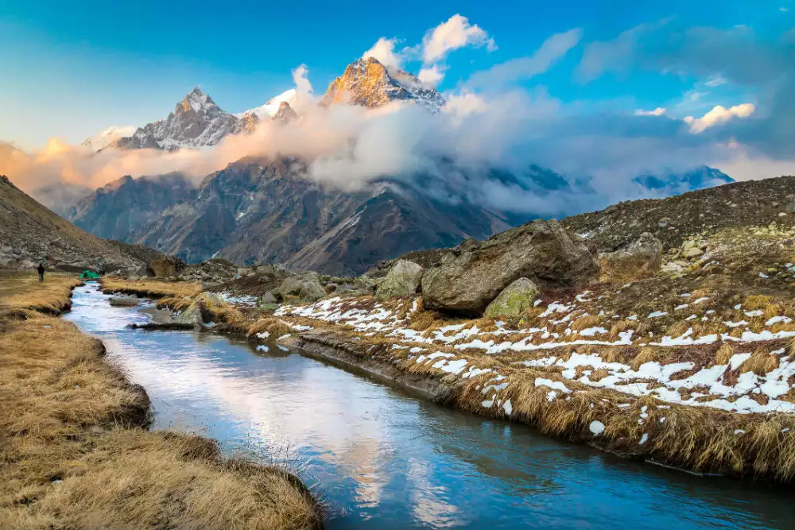
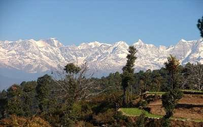
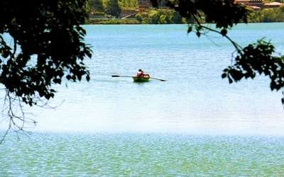
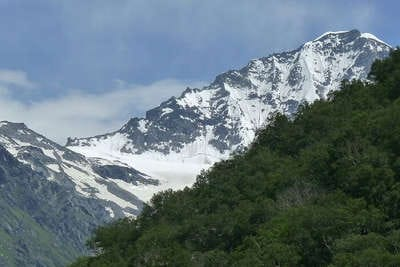
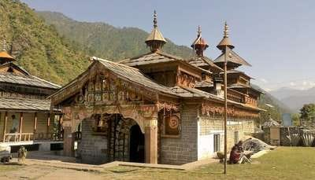
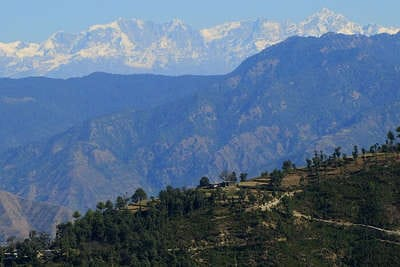
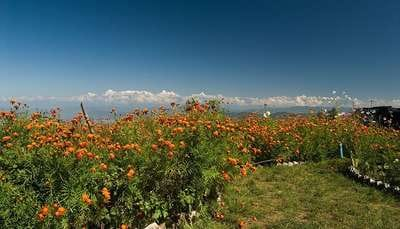
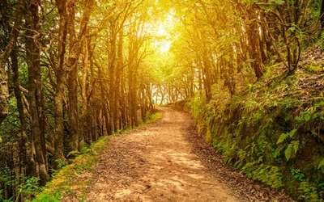

Kausani: Embrace The Serenity
Kausani is the perfect respite from the hustle bustles of the city and is one of the most serene and offbeat places in Uttarakhand. Famous for wide panoramic views of snow-capped Himalayan peaks like Nanda Devi and Panchachuli, this place, located in the Bageshwar district of Uttarakhand is a piece of heaven for nature lovers, photographers, trekkers, backpackers and honeymoon couples. Summer is cool and pleasant in Kausani but if you wish to experience spectacular snowfall in winter, there is nothing that can beat the charm of Kausani.
Major attractions: Baijnath Temple, Rudradhari Falls, Kausani Tea Estate and Anasakti Ashram. Other than sightseeing, shopping at Mall Road and dining at Garden Restaurant; one can indulge in trekking, camping, mountain biking, rock climbing and rappelling.
How to reach: Nearest railhead to Kausani is at Kathgodam, 136 km away. From there take a bus or hire cab to reach Kausani. Driving time is approximately 4 hours. Nearest airport to Kausani is at Pantnagar- 162 kms away.

Khirsu: Feel The Tranquility
For those who’re searching for tranquillity and peace of mind, Khirsu is the best place to be. Surrounded by lush green Oak and Deodar forests and apple orchards, this picturesque hamlet is one among the finest offbeat places to visit in Uttarakhand, in the lap of Garhwal Himalayas. Khirsu is located 19 kms from Pauri and is a heaven for trekkers, backpackers and solo travellers. Here, one can enjoy stunning views, temple tours and indulge in nature walks. It is one of the best places if you are visiting Uttarakhand in June.
Major attractions: Visit Ghandiyal Devi temple and Kandoliya Devta temple to seek blessings and trek up to Ulka Ghari to enjoy jaw-dropping view of the mountains ranges and snow-capped peaks.
How to reach: Jolly Grant Airport is the nearest airport, located 145 kms from Khisru. Kotdwar, situated 115 kms away is the closest railhead. The drive to Khirsu is extremely stunning and worth every bit.

Bhimtal: Behold The Beauty
Not as touristy as Nainital and Dehradun neither as isolated as Chaukori and Peora, Bhimtal is among the most gorgeous offbeat places in Uttarakhand. With a sparkling lake at the centre, named after Bhima from Mahabharata, this small yet beautiful place lies between Kathgodam and Nainital and mostly visited by solo travellers and honeymoon couples, in pursuit of privacy, isolation and solace.
Major attractions: Apart from boating in Bhimtal Lake, visit Victoria Dam, Hidimba Parvat, Butterfly Research Centre and Folk Culture Museum. One can also enjoy stargazing, dirt biking and paragliding.
How to reach: From Pantnagar, one can reach Bhimtal in approximately 2 hours. But the easiest way is to avail train, get down at Kathgodam and hire a cab to reach Bhimtal, located 30 kms from the railhead.

Abbott Mount: Enjoy A Laid-Back Vacation
With lush deciduous forests adding more to the scenic charm of this district in Pithoragarh, Abbott Mount is nothing less than a photographer’s dream. Being a perfect spot for bird-watching and having a laidback vacation, this place tops the list of offbeat unexplored places in Uttarakhand. You can go for various treks in the region or simply have a relaxing weekend getaway admiring the beauty from the comfort of your accommodation.
Major attractions: Pancheshwar, Lohaghat and Vanasur ka kila
How to reach: The nearest railway stations include Tanakpur and Kathgodam. With a mere 80 kms distance, you can reach Abbott Mount from Tanakpur by hiring a cab from the railway station. You can also book a flight as the nearest airport is Pantnagar airport and from there, you’ll have to rent a cab again

Mori: For Nature Walks And Birdwatching
. If you enjoy birdwatching and nature walks, then you are going to love visiting Mori. located on the banks of Tons River, Mori will titlate you with the enchanting views of the mountains and lush environs. Find peace while listening to the gurgling waters of the stream and feel a connection with nature. The little hamlet has an interesting history related to it. You will also find Duryodhan Temple near Mori that you should visit when you are here.
Major attractions: Netwar, Duryodhana Temple, Lunagad Creek
How to reach: The nearest railway station and airport are in Dehradun. You can take a bus to Purola from Dehradun and then share taxi to Mori.

Gwaldam: Look At The Picturesque Landscapes
One of the most offbeat places to stay in Uttarakhand, Gwaldam located in the Chamoli district of the serene state of Uttarakhand has gorgeous lush landscapes that will leave you craving for more. There’s nothing like a nature walk amidst the tea gardens here and a mere 3 km walk will lead you to Talwari to witness the vibrant birds of Himalayan region.
Major attractions: Views from Trisul peak, Buddhist monastery
How to reach: The nearest railway station to Gwaldam is Haldwani. From there, you can hire a cab to reach Gwaldam.

Mukteshwar: Holy Temples And Hidden Waterfalls
If you are looking for less tourist places to visit, or the most unexplored places in Uttarakhand, then kindly bring your attention to Mukteshwar. The quaint hill station is a perfect place to enjoy a vacation amidst the mountains. Mukteshwar is famous for its holy temples, hidden waterfalls, apple orchards, and lush greenery. You must definitely spend a few days in this place for an amazing experience. Don’t forget to go stargazing. It is one of the best places to visit in Uttarakhand in summer.
Major attractions: Mukteshwar Dham Temple, Shaolin ki Jaali, Waterfall
How to reach: Take a shared cab from Kathgodam.

Binsar: Experience Spirituality At Its Best
The list of best offbeat and spiritual places in Uttarakhand also has Binsar. Snuggled in the Jhandi Dhar Hills, Binsar is a paradise for nature buffs, wildlife and bird lovers and peace seekers. With the terrific views of 4 gorgeous Himalayan peaks: Nanda Devi, Kedarnath, Shivling and Trishul, Binsar is a pure bliss in the lap of Garhwal Himalayas.
Major attractions: Other than Kasar Devi temple, Zero Point and Golu Devta temple, pay a visit to Binsar Wildlife Sanctuary. There you can enjoy jeep safaris and jungle treks and spot endangered wildlife and birds.
How to reach: Either drive from Kathgodam, the nearest railhead at a distance of 119 kms or from Pantnagar – the nearest airport located 152 kms away.